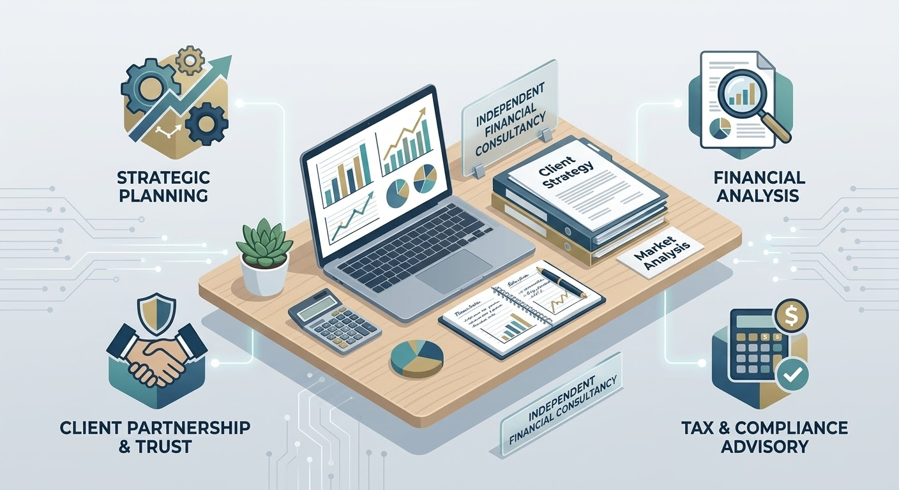
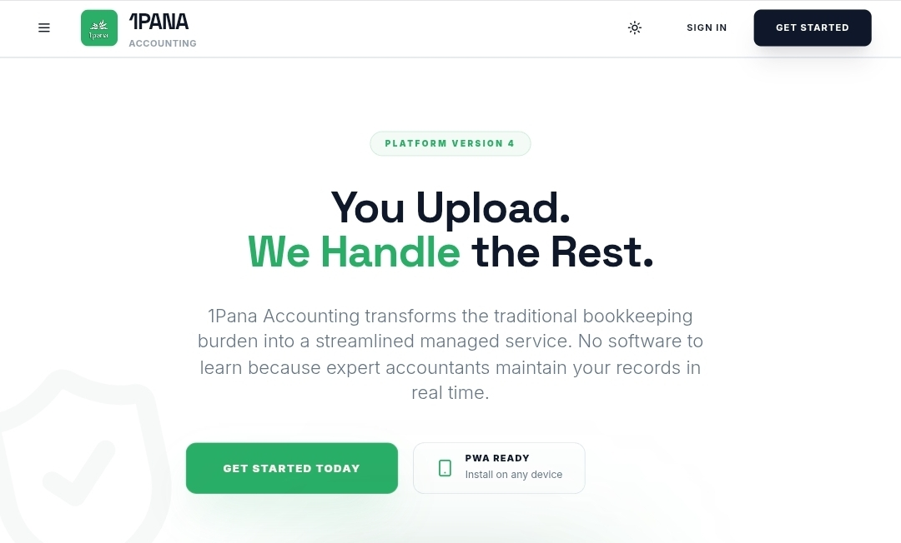
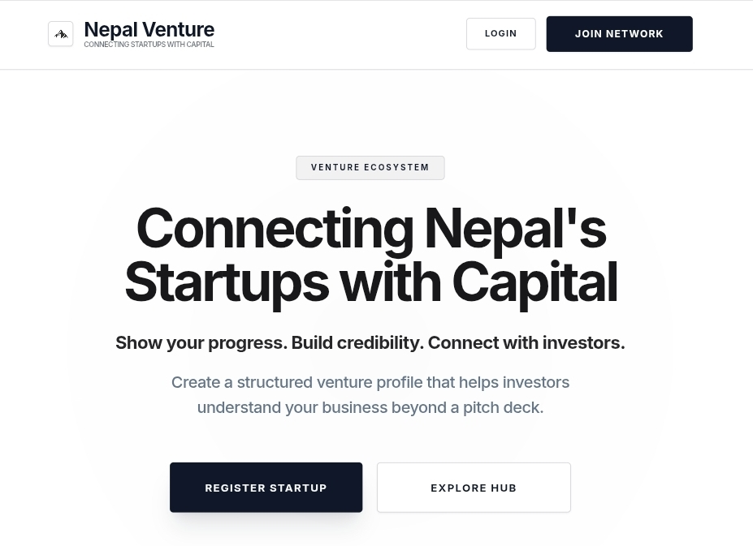
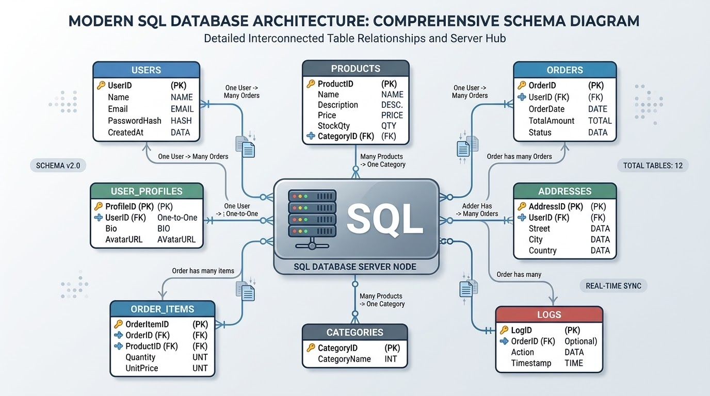

⌁
Financial Reporting & Audit
Financial statement preparation, first-time framework adoption, account reconstruction, investigative work, audit support and coordination across NPOs, SMEs and commercial entities.
Finance and accounting professional with 5+ years of experience in financial reporting, audit, modelling and consulting. I work at the intersection of traditional practice and modern systems, understanding business problems, structuring the numbers and building practical tools that help work get done.
A combination of professional experience, practical skills and areas I continue to develop. Depth varies across these domains, I prefer to be clear about what I know and what I am still learning.
Financial statement preparation, first-time framework adoption, account reconstruction, investigative work, audit support and coordination across NPOs, SMEs and commercial entities.
Corporate financing models, financial projections, Excel-based analysis (including Power Pivot and data models), and structured approaches to complex financial questions.
Database architecture, application workflows, AI-assisted full-stack development, and connecting financial processes with practical digital tools.
My approach combines financial discipline with curiosity about how systems work. I value clear thinking, practical execution and honest learning.
Understand the context, constraints, records and people involved before deciding what needs to change.
Bring structure to financial information, workflows and decisions so that the next step becomes clearer.
Turn analysis into usable models, better processes or working tools rather than stopping at recommendations.
Test ideas, pay attention to feedback and keep improving. Be clear about what is proven and what is still developing.
A selection of professional contributions and independent explorations. These examples show how I approach financial, operational and product challenges, and what has been built or supported so far.

Professional workWork across financial reporting frameworks, first-time adoption for new entities and NPOs, account reconstruction from incomplete records, corporate financing models that supported loan approvals over NPR 1.2 Crore, high-volume verification assignments, and multi-sector statutory and investigative audits.

Product explorationA six-month independent product effort: intensive three-month core build followed by three months of refinement and trial runs. Delivered a functional MVP validated through 3 months of complete data entry across 3 active entities.

Startup ecosystemConceptualisation and deployment of a startup-investor platform. Designed core database architecture and structured reporting logic. Successfully engaged with 15+ fund seekers organically without promotion, leading to 5+ completed profile creations.

Systems & technologyExploration and development of accounting database architecture and practical digital tools that connect financial processes with structured data. Experience includes Excel data models, relational and NoSQL databases, APIs and modern web deployment environments.
The path so far has moved from formal accounting practice into independent work and broader exploration of systems and product development.
M. Khanal & Co., Chartered Accountants, practical experience across financial statement preparation for donor-funded projects, high-volume verification work, account reconstruction, investigative and statutory audits, and multi-sector engagements.
Financial consulting and audit support: financing models (facilitating NPR 1.2 Crore loan approvals), first-time reporting frameworks, account finalisation, audit coordination, and tax/compliance assignments.
Intensive independent work on accounting platform architecture (1Pana Accounting MVP) and a startup-investor platform (Nepalventure), combining domain knowledge with full-stack and database design.
Continuing to explore opportunities where accounting foundations, systems thinking and practical problem-solving can create lasting value.
Institute of Chartered Accountants of Nepal (ICAN), CAP-III (Final) in progress (Group 2 cleared). CAP-II completed 2019. CAP-I completed 2015.
My work continues to develop across disciplines. I am interested in roles and collaborations where I can contribute with the experience I have, take responsibility, and keep learning through practical work.
I’m open to worthwhile work, new challenges and meaningful collaboration across finance, systems and business.
If the challenge sits somewhere between finance, operations, technology or a new business idea, there may be a useful way to work together.
Financial reporting, audit support, account reconstruction, financial modelling and related advisory assignments.
Accounting systems, digital workflows, database thinking and practical product development informed by finance processes.
Startup ecosystem initiatives, early-stage ideas, venture exploration and building useful things with capable people.
For a specific assignment, a potential collaboration or an exchange of ideas, share a little context and I’ll be glad to connect.
Share a little about what you’re working on or the kind of opportunity you have in mind.
Emailmail@sanjeevkhanal.com.np ↗LinkedInConnect on LinkedIn ↗